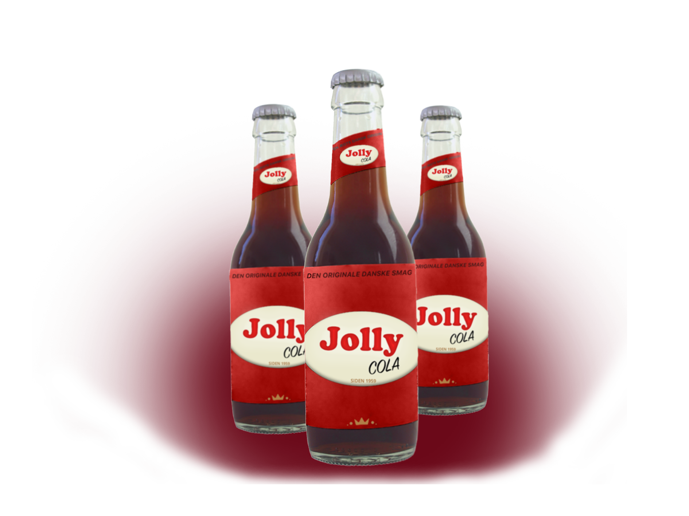
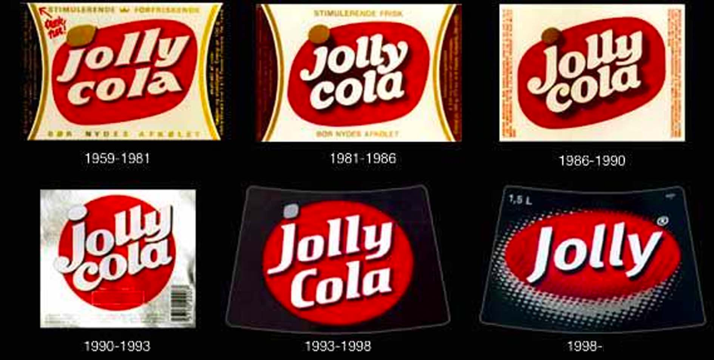

Om Jolly Cola
Til dem der ikke har behov for at følge strømmen og er ligeglade med, om de skiller sig ud.
Til dem, der stadig holder med Boldklubben Frem - uanset om det går frem eller tilbage.
Til dem, der stadigvæk nyder den danske sommer, selvom det står ned i stænger.
Til dem, der synes at bøfsandwich og Jolly er en original dansk lykke på en søndag.
Til dem, der nørder helt ned i detaljen, fordi de ikke kan lade være og ja.. bare fordi.
Til dem, der er ligeglade med, hvad andre tænker, med kun tænker på, at det skal føles ægte og rigtigt. Også smagen!
Jolly er netop til dem, der nyder det originale, og det at være original.
Jolly Colas historie
Jolly Cola blev lanceret den 1. juli i 1959 af Dansk Cola Drik, et fælles aktiv blandt 18 danske bryggerier og mineralvandsfabrikker. Jolly Cola havde helt op til midten af 1980´erne en markedsandel på omkring 40 % af det danske cola-marked.